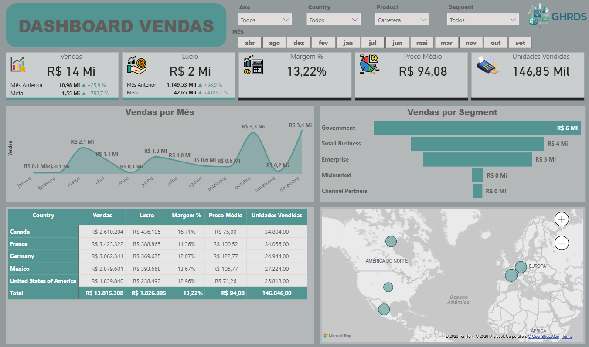
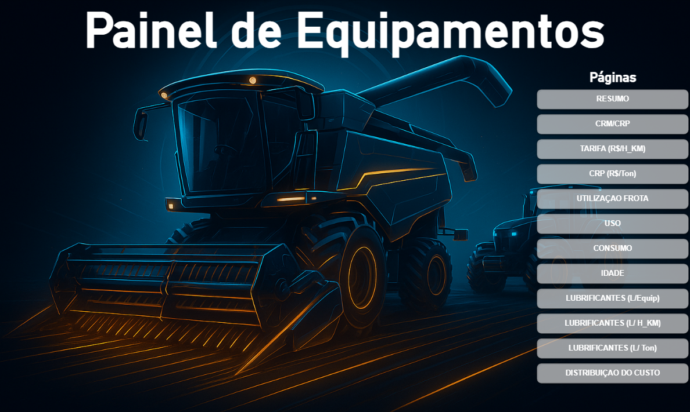
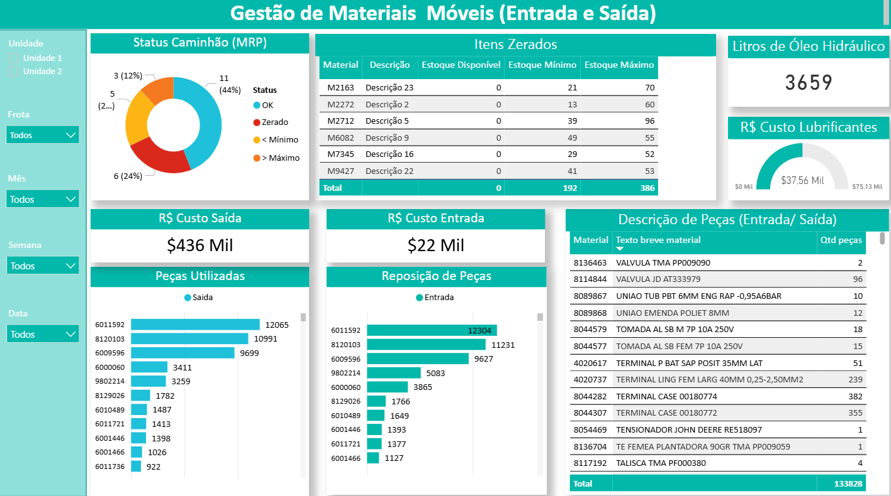

Especialista em Power BI corporativo com entregas confiáveis e foco em governança
Apresento projetos e competências em Power BI para operações, manutenção, RH e vendas, com automação apenas como suporte.
Este portfólio mostra minha capacidade técnica em Power BI e resultados internos, sem expor clientes ou contratos.




Confiança nos resultados
Slider com dashboards reais de projetos internos, mostrando trabalho sólido e competência técnica para quem busca qualidade na entrega.
BI com foco em resultado
Dashboards que tornam indicadores fáceis de entender para gestores e operações.
Modelagem e DAX avançado
Estruturas confiáveis, cálculos precisos e relatórios prontos para uso corporativo.
Governança de dados
Trabalho com qualidade e segurança, alinhado a processos internos e controles.
Trabalho com confiança
Entregas internas com governança, clareza e foco em resultados que equipes e líderes podem apoiar.
O que faço
Integro tecnologias Microsoft para oferecer análises completas, automações robustas e relatórios de alto valor estratégico.
Power BI
Modelagem inteligente, DAX avançado, relatórios interativos e governança de dados para decisões mais rápidas.
Power Apps
Aplicações low-code para automatizar processos internos e tornar o cotidiano operacional mais eficiente.
Power Automate
Fluxos que conectam sistemas e liberam as equipes de atividades manuais repetitivas.
Foco no negócio
Entregas pensadas para reduzir custos, melhorar compliance e transformar operações baseadas em dados.